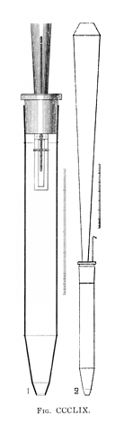
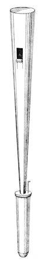
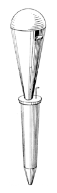
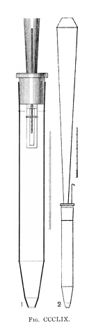
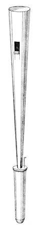
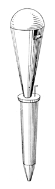

|
Euphone English Euphône French Euphon German |
|
Euphonium English Eyphone (unknown) |
A free-reed stop of 16' or 8' pitch, imitative of the instrument of the same name: a tenor or baritone tuba similar to the baritone horn, a member of the saxhorn family, invented in the 1840's by Adolphe Sax. It is interesting to note that Grove and Williams date this stop from around 1820, and the first recorded example was at Beauvais Cathedral in 1827-29, thus predating Sax's instrument by at least fifteen years. In 1790 Chladni invented an instrument of the same name using glass plates and rods, but it is difficult to imagine how such an instrument could have inspired an organ stop of this type. It is possible that the stop's inventor simply made up the name from the Greek words meaning �good sound�. The German name for this instrument is Baryton.
Skinner and Irwin consider the Euphonium to be a different stop; see that entry for further discussion.
The original Euphone had resonators that Wedgwood describes as �cylindrical in body, terminating in a long cone�. It was capable of expression by varying the wind pressure via a console device. (See also Conoclyte and Terpomele.) Another expressive Euphone was introduced by Sebatian Erard in 1830, which featured covered, slotted, somewhat balloon-shaped resonators as shown in the illustration above left, reproduced from Wedgwood. Its tongues were broad and thin. During Wedgwood's time, Euphones were made in the form shown in the illustration above center, reproduced from the same source. Audsley provides the illustration reproduced above right, with the following description:
Different forms of resonators have been devised, some of very peculiar form, but those most approved are either of the plain inverted conical form, shorted and of smaller scale than thsoe used for the Trumpet, as adopted by Roosevelt; or of the same form surmounted by some contracting or shading device, preferably a short truncated cone, as shown at the top of the resonator in the drawing of the complete pipe, 2. In other, less effective, examples the inverted conical resonators are closed at the top and slotted for the emission of wind and sound. The drawings are accurately made to scale from a C (4 ft. pitch) pipe constructed by the well-known make, August Luakhuff. All free-reed pipes require for their prompt and satisfactory speech large boots; and this is shown in the Section 1, which also shows the free-reed, the block in which it is inserted, and the tuning-wire. The length of the boot is 13 3/4 inches, while the entire length of hte resonator is only 25 2/4 inches. The largest diameter of the resonator is 2 7/8 inches, and that of the opening at top 1 1/2 inches. The length of the tongue is 2.25 inches and its width 0.27 inch.
Skinner has the following additional observations regarding the Euphone:
The pipe is very difficult to tune because of its acute sensitivity to the acoustical influences of both body and feet. To ensure reliable pitch and speech, the foot should have a resonance in sympathy with the barrel. Otherwise, the reed is subject to acoustical interference.
According to Grove, the Euphone is often made without resonators. The tone of this stop varies considerably. Irwin calls it �muffled, reedy, somewhat pungent�, while Audsley calls it �open, smooth and full�.
See Labial Euphone.Osiris contains eleven examples of Euphon[e] at 8' pitch, seven examples at 16', and three at 4', and one example of Euphonium. No examples are known of Eyphone (mentioned only by Wedgwood). The earliest examples are listed below.
Euphone 8', Positif; Grenade sur la Garonne, France; Cavaillé-Coll 1857.
Euphone 8', Grand Orgue; Euphone 16', Positif; Cathedral, Murcia, Spain; Merklin 1857.
Euphone 16', Choir; Town Hall, Leeds, England; Gray & Davison 1859.
Euphonium 16', Main Pedal; John Wanamaker Store, Philadelphia, Pennsylvania, USA.
|
Original website compiled by Edward L. Stauff. For educational use only. Euphone.html - Last updated 8 January 2003. |
Home Full Index |